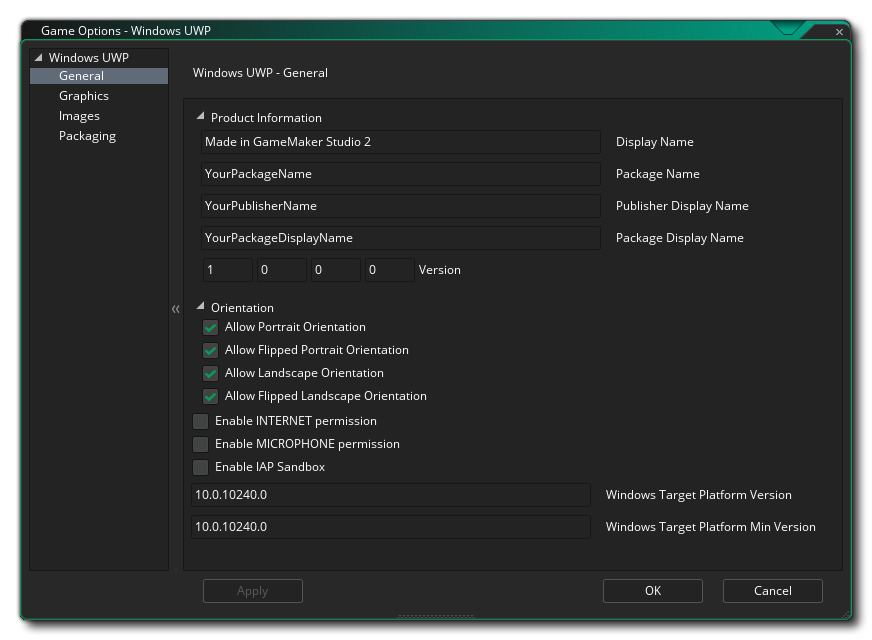
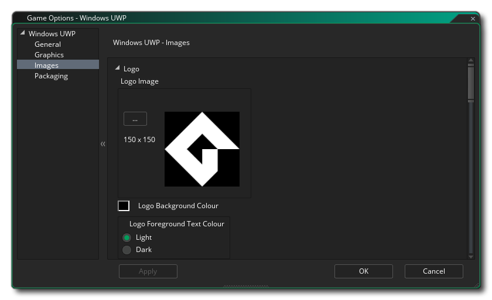
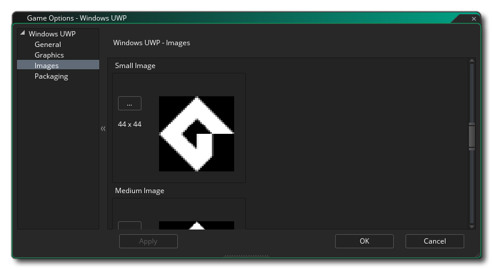

Esta sección describe las diferentes opciones disponibles para usted que controlan la forma en que se compilarán sus proyectos de juegos UWP (Plataforma universal de Windows). Las diferentes secciones son:

La sección general de las opciones de UWP es donde puede configurar la información del producto:
- Nombre para mostrar: especifica el nombre descriptivo de la aplicación que se muestra a los usuarios (esta cadena es localizable).
- Nombre del paquete: este es el nombre del paquete que ha creado y debe coincidir con el utilizado para la clave de desarrollador que ha creado para el juego (consulte la sección sobre empaquetado, a continuación).
- Nombre para mostrar del paquete: Este es el "nombre corto" del paquete y, idealmente, debe ser el mismo que el Nombre para mostrar
- Nombre para mostrar del editor: este es el nombre de su compañía o la persona que desea asociar como editor de juegos.
- Versión: El número de versión de tu juego.
Después de configurarlo, puedes seleccionar las diferentes Orientaciones en las que se puede ejecutar tu juego para la mejor experiencia de usuario. Las opciones disponibles son:
- Paisaje
- Retrato
- Paisaje volteado
- Retrato volteado
Por defecto, todos estos serán seleccionados y usted debe deseleccionar aquellos que no necesite.
Después de configurar las opciones de orientación, puede señalar los diferentes Permisos que su aplicación UWP necesitará de las siguientes opciones:
- Habilitar permiso de Internet: marca el juego como que tiene acceso a Internet. Esto está desactivada por defecto.
- Activar permiso de micrófono: marca el juego para que tenga acceso al micrófono del dispositivo. Esto está desactivada por defecto.
- Habilitar el sandbox de IAP: marca el juego como uso de sandboxed In App Purchases. Esto está desactivada por defecto.
Finalmente, tiene dos opciones para configurar las versiones Target y Minimum de la plataforma de Windows. En general, no querrá tocarlos y debería dejarlos en sus valores predeterminados, pero si tiene problemas de compilación (específicamente, si no puede instalar el Windows SDK configurado de manera predeterminada, deberá cambiar estos a lo que tiene instalado), entonces es posible que desee establecerlos en otros valores. Si no está seguro de qué valores establecer, cree un nuevo proyecto UWP en Visual Studio y observe cómo establece los valores.
Las opciones de gráficos son aquellas que debe configurar para determinar cómo usará su juego la tarjeta gráfica de su dispositivo UWP de destino. Se incluyen las siguientes opciones para que las modifique:
- Interpolar colores entre píxeles: activa la interpolación, que básicamente "suaviza" los píxeles. Para gráficos de píxeles nítidos, debería estar desactivado, pero si tiene buenas combinaciones alfa y gráficos de bordes suavizados, es mejor dejarlo encendido. Esto está desactivado de manera predeterminada.
- Mostrar cursor: cuando esta opción está habilitada, el cursor del sistema operativo predeterminado se mostrará en tu juego. Si esto está deshabilitado, entonces mientras el mouse esté sobre la ventana del juego, no habrá ningún cursor visible a menos que haya creado uno como parte del proyecto del juego (esto está activado de manera predeterminada).
- Iniciar pantalla completa: cuando esto está habilitado, el juego comenzará en modo de pantalla completa. Tenga en cuenta que esto puede no tener un efecto visible en otra cosa que no sea un dispositivo de escritorio Windows 10.
- Permitir el cambio de pantalla completa: cuando esta opción está habilitada, puede cambiar el juego entre los modos de pantalla completa y de ventana usando los atajos apropiados. Tenga en cuenta que esto puede no tener un efecto visible en otra cosa que no sea un dispositivo de escritorio Windows 10.
- Utilice la sincronización para evitar que se rasgue: esta opción existe, pero se ha desactivado debido a que la plataforma UWP requiere que v-sync esté siempre activada.
- Escalado: aquí puede elegir mantener la relación de aspecto (por lo tanto, una habitación de 4: 3 se "encajonará" en una 16: 9) o escalar completamente (estirando la imagen para que se ajuste a la pantalla completa).
¡ADVERTENCIA! Apagar la superficie de la aplicación deshabilitará todas las opciones de escalado establecidas en las Opciones de juego de UWP hasta que se vuelva a encender. Ver la superficie de aplicación para más detalles.Finalmente, existe la opción de establecer el tamaño de la página de textura. El tamaño predeterminado (y el más compatible) es 2048x2048, ¡pero puedes elegir desde 256x256 hasta 8192x8192! También hay un botón marcado Ver que generará las páginas de textura para esta plataforma y luego abrirá una ventana para que pueda ver cómo se ven. Esto puede ser muy útil si desea ver cómo están estructuradas las páginas de textura y evitar tener páginas de textura más grandes (o más pequeñas) de lo necesario.
NOTA: ten en cuenta que cuanto mayor sea el tamaño de la página de texturas, menos compatible será tu juego en dispositivos UWP con especificaciones más bajas.

La primera parte de la sección Imágenes es para definir el logotipo del juego. Este es esencialmente el ícono que tu juego usará dentro del ecosistema de UWP, y vale la pena señalar que estas imágenes pueden ser transparentes. .png archivos, en cuyo caso se dibujarán sobre el color de fondo especificado en esta sección. Este color de fondo también se aplica al color del botón en los cuadros de diálogo propiedad de la aplicación y a la página Descripción de la aplicación en la Tienda en dispositivos.
Después de configurar el logotipo, puede configurar la pantalla de bienvenida para el juego. Esta es la pantalla que se mostrará cuando comiences tu juego, y no puede tener más de 620 x 300 píxeles y, como el logotipo, puede ser transparente. .png archivo, en cuyo caso se usará el color de fondo que usted elija. 
Finalmente, tienes la opción de configurar los distintos Tiles que tu juego usará en los diferentes dispositivos en los que se puede ejecutar UWP. Puede configurar lo siguiente:
- La imagen del mosaico pequeño es la imagen del logotipo que aparece junto al nombre de la aplicación en la barra de búsqueda y otras áreas de la interfaz de usuario. Debe ser de 44 x 44 píxeles.
- La imagen de mosaico medio debe ser una imagen de 71x71 píxeles.
- La siguiente imagen de mosaico es el mosaico del logotipo de Tienda y debe ser de 50 x 50 píxeles.
- El mosaico de imagen ancha es el que aparece cuando el mosaico está en su formato ancho y debe tener 310 x 150 píxeles. Si no se proporciona esta imagen, el mosaico solo se puede mostrar en formato cuadrado y no puede aceptar notificaciones basadas en tipos de plantilla amplia. Dado que el usuario puede decidir qué formato utiliza el mosaico, se recomienda que incluya un mosaico de imagen ancha. También tenga en cuenta que si se proporciona un mosaico de imagen ancha, el mosaico puede aparecer inicialmente en su formato ancho.
- El mosaico de imagen grande es el formato de mosaico vivo grande y debe tener 310 x 310 píxeles. Tenga en cuenta que esto solo se utilizará en el sistema operativo de escritorio.
Vale la pena señalar que GameMaker Studio 2 tiene una herramienta Project Image Generator que se puede utilizar para crear automáticamente todas las imágenes necesarias para todas las diferentes plataformas de destino en las que se está compilando el juego. Si utiliza esta herramienta, debe revisar las imágenes creadas para asegurarse de que sean lo que necesita.
GameMaker Studio 2 proporciona una clave de desarrollador predeterminada para el desarrollo de WindowsUWP, pero se recomienda que genere la suya propia y la señale aquí. Para hacer esto, cree un proyecto vacío en Visual Studio Express y luego almacene en un lugar seguro una copia de la generada automáticamente. *.pfx archivo que se incluirá en el proyecto vacío (esta es la clave de desarrollador). Entonces debes vincular eso *.pfx archivo aquí
Después de enlazar con el archivo, debe hacer clic en el botón Instalar asociado y luego seguir las instrucciones en el símbolo del sistema que se abrirá. Si no lo hace, entonces el uso de los botones Ejecutar / Depurar (o pulsar F5) fallará y su juego no podrá probarse en la plataforma UWP (sin embargo, si usa Crear Ejecutable, el proceso de instalación de certificación se iniciará automáticamente si el *.pfx aún no se ha registrado).
NOTA: Cuando se trata de cargar su aplicación en la tienda, necesitará obtener la información correcta. *.pfx por tu titulo Esto se hace asociando su aplicación con la Tienda Windows en Visual Studio, lo que hace que Visual Studio genere una nueva *.pfx específicamente para la aplicación. También vale la pena señalar que puede asociar cualquier aplicación con la Tienda de Windows en Visual Studio, lo que significa que puede asociar un proyecto en blanco con la aplicación de la Tienda de Windows y simplemente copiar el pfx a una ubicación segura que luego se puede usar dentro de las Opciones de juego de UWP. Puede encontrar instrucciones sobre cómo hacerlo en la Base de conocimientos de YoYo Games.En esta sección, también debe especificar el nombre del editor que se utilizó para generar el certificado de firma. La entrada siempre debe estar precedida por "CN =", por ejemplo: CN=YoYoGames.
La sección Xbox Live de las Opciones de juego de UWP es donde puedes activar tu proyecto UWP para usar en la consola Xbox One. La activación del proyecto para Xbox aquí le permite hacer lo siguiente cuando el proyecto se ejecuta en una Xbox One:
- Inicia sesión en Xbox Live desde la aplicación
- Use la identidad del usuario de Xbox Live de alguna manera en el proyecto (por ejemplo, mostrando el gamertag o la imagen del jugador)
Sin embargo, antes de que pueda hacer estas cosas, deberá asegurarse de haber hecho clic en la casilla de verificación Habilitar Xbox Live, y si usted es parte del Programa de creadores de Microsoft, también debe marcar la opción de la Aplicación del Programa de creadores. Si forma parte del Programa de creadores, deberá agregar el ID de título y el ID de configuración del servicio (puede encontrar más información sobre estos en Microsoft ).
Tenga en cuenta que, actualmente, para probar la funcionalidad de Xbox Live en su proyecto, deberá usar Crear archivo ejecutable en lugar de Ejecutar, ya que la salida de UWP para Xbox debe usar el certificado de firma de la Tienda Windows que entrega como parte de la Información de empaquetado (ver arriba) en lugar de el temporal provisto con GameMaker Studio 2, que es lo que se usará cuando golpees Ejecutar.
Una vez que haya habilitado XBox Live, puede seguir adelante y usar las funciones de XBox Live en su proyecto.